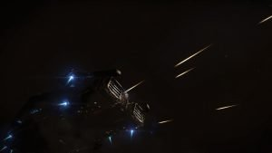

“Stop your ship and prepare to be boarded.” -:crackles over the coms. “I do not recognise your authority, identify yourself.” -:Engalo replies. A few seconds silence… A thump is heard as a cannon round hits the shield. “This is your final warning. Stop your ship and prepare to be boarded.” Brad and Erik enters the bridge. Brad:- “Status?” “I don’t think they are here to give us a firm talking to… Five eagles and they want to board us” -:Engalo smirk. “Dark Wheel?” -:Erik asks. “I don’t want to turn around and scan them… Who else could it be?” -:Engalo turns towards Erik:- “Now sit down you two and help out, we could outrun them still.”
“Full power to engines let’s see what this baby could do!…” -:Engalo grins while pushing the throttle to full. A unsatisfactory hum sounds and the speed ever so slowly starts to climb. Brad turns to Engalo:- “You know… you only bought this ship with class D thrusters…” Engalo sinks down in he’s all leather commanders chair. “Crap” The eagles opens fire and tracer rounds together with a hail of bullets and cannon shot hammers the shield of the Anaconda.

“Shields at 70% commander!” -:Erik yells. Engalo quickly turns 90 degrees straight up. “We need to jump! Give me a system more than 15 light years away Erik! These Eagle’s doesn’t have a good jump range.” -:Engalo stares at Erik. “LTT 5212… 17 Light years away.” -:Erik looks at Engalo. “Great” -:Engalo grins:- “Now, let’s see if we could scatter them a little.” Engalo deploys weapons and setts them to fire at will. As the turrets open fire the five eagles break off forming a star shape as they do. The turrets struggle for power tracking all five targets. The five eagles burns inn from all direction taking out the shield. Brad and Erik looks at Engalo. Engalo just stare straight ahead at the HUD. “Brad, we got a lock on LTT, power up the FSD.” -:Engalo almost standing in he’s chair now, still staring at the HUD in front of him. The eagles are closing in fast for a second pass as the FSD spinns up. The time seems to slow down, the sounds muffles as the projectiles and energy weapons tears in to the hull of the Anaconda. Engalo almost standing get’s thrown over the HUD and in to the bridge window in front of him. Falling lifeless to the floor. Erik and Brad manages to hold on as they could see the hull open up in the forward part of the ship, then…
Silence…
Metal plates and other debrie loosens as the ship hurls trough towards LTT 5212 every now and then a metalic ripping sound is heard. Erik runns over to Engalo now lying on the floor:- “Engalo! Can you hear me, are you allright?” Engalo wakes up bloodied and bruised: “What happened?” -:Engalo still in a Haze as the ship arrives in LTT 5212. Brad quickly finds a secluded planet with no registered settlements. “You allright Commander?” -:Brad asks. “Yeah… I think so… did we make it?” -:Engalo lifts himself back in to he’s chair with Eriks help. Screenshot_0105“We are still alive, I have no idea of the status of the ship tho.” -:Erik mutters and looks out at the battered ship.
“What the f…” -:Engalo looks out at the wounded ship, sparks and atmosphere leaking. “We realy need to find some place to land and have a look at the damage. What’s the status of vital systems Erik?” -:Engalo turns towards Erik now back at he’s chair. Erik looks back at Engalo. “I can’t answer that. The diagnostic system is dead. Wel, most systems are dead… It’s kinda weird we still have power to engines.” -:Erik throws he’s arms up in the air. “I have set course for a small uninhabited rocky ice planet. It looks to have some deep canyons to hide in.” -:Brad steadily maneuvers the Anaconda towards the planet.
“There Brad. A nice flat…ish… surface.” -:Engalo points at a small area surounded by some snowy mounds. As Brad carefully maneuvers towards the landing spot the forward thrusters give up. The nose of the ship sharply drops and slams in to the ground, the mass and speed of the ship drags the nose forward as Brad engages the landing gear. A big whuump is heard as the aft part of the ship touches down. “How did we get in to this mess? What the hell did we disturb?!” -:Engalo looks over at Brad. “I have no idea…” -:Brad replies. You could hear the hopelessness in he’s voice.
“We need to manually inspect the whole ship, I do fear the worst tho.” -:Erik walks over to the engineering console. Both Brad and Engalo stands up simultaneously, however Engalo falls back down. “Wow! My head realy spinns.” -:Engalo places a hand on he’s head, suddenly realising that he is bleeding. “Throw me the medkit Erik will you?” -:Engalo points at the medkit hanging by the door in the middle of the bridge. Erik throws the Medkit to Engalo. “We inspect the ship, you patch yourself up. Your console there is still working. I’ll send a live feed up here to you.” -:Erik gesticulates Brad to follow. Brad nods and follows Erik of the bridge.
Engalo looks over to the coms HUD. “Does it still work? YES! It works…” -:Engalo just realising what he is about to do. A chill runns down he’s spine. “No! no no no… I cant do it” -:Engalo closes the coms screen again. “It’s no way we are in that deep shit” -:Engalo says to himself. “Commander? Can you hear me?” -:Erik turns up on the monitor. “Yes Erik. I can see and hear you. How bad is it?” -:Engalo sits up in the chair and watches Erik’s face going pale as the SRV is lowered down. “I can’t belive it… it’s not possible.” -:Erik turns on the external view cameras on the SRV. The view of the battered ship makes Engalo’s jaw drop. “What kind of eagles where we fighting? How on earth did you fly this heap of junk here Brad?!” -:Engalo leans back in the chair in a loss of words by the sight of he’s brand new but now not so shiny Anaconda.
“There is no way we could manage to fix this Engalo…” -:Erik says while driving around the ship. “This is a abandon ship moment Commander” -:Brad appears on the monitor. “There is nothing more we could do, nothing more I want to do…” -:Brad says firmly. “I must agree with Brad on this one. We are still alive and I want to stay alive. Sorry Engalo but this is as far as we could go” -:Erik says. Engalo leans forward in the chair. “You are absolutely right, we need to get you two back. I’m sorry I brought you two inn to this mess. I have no idea what I stumbled over back there, however I have no right to put you two trough more danger than I allready have. The coms are working. Erik is there a way to send a crypted message to Faulcon DeLacy on Founders World? ” -:Engalo says clearly moved by the tought of what he just put these two, who he bearly knows trough. “Well, we could hide the signal in plane sight. We deliver ten, twenty ships a day to customers. A standard pick us up signal should be easy to intercept but hard to differentiate with other common signals. They probably don’t know you just bought a ship, hopefully they still don’t know who you are at all.” -:Erik says still driving around mapping damage. “Good plan” -:Engalo smiles slightly. “I’ll send the signal right away.” -:Erik inserts a datacrystal into the SRV. “Signal sendt” -:Erik says just a second later. “Good, hopefully it’s Falcon guys turning up and not DW’s. Get back in here whenever ready” -:Engalo turns of the monitor.
Engalo turns on the coms. “Secure channel, CMDR Cyraios. Text only with lock code Omega 8.” :Engalo shakes he’s head. :- “All the shit of an entire planet is going to hit the fan now…”
To: CMDR Cyraios
Greetings old friend. I got my ass in some deep shit. I just bought myself a shiny new Anaconda, but not even 24 hours old It sits on a planet banged up, barely any power and only a few thrusters working. I don’t even think this ship is ever getting back up from this one. What a waste of money huh? Yes yes… I know what you are thinking by now… “Phyton dude, that’s the way to go. Only thing that packs a knockout”
From Jameson Memorial where I tok delivary of the Anaconda I did a shakedown cruise with the two engineers from Falcon D. to make sure everything was ship shape. We got some issues with the navigation computer and decided to land… long story short. I took a strole with the SRV while waiting for them to fix the navigation computer, stumbled over some deal or somthing the Dark Wheel where doing. Got shot at, fired back, now they don’t like me… Im currently in LTT 5212 and as I write this I just realized I don’t realy know where in LTT 5212. Some moon. Use the carrier signal to home in on me. I need your help…
Engalo
“Encrypt with Omega 8, Code 173467321476C32789777643T732V73117888732476789764376 Lock and send.” -:Engalo leans back in the chair after sending the message. “Now I realy need a drink”
After thirty minutes Erik and Brad is picked up by an Adder about ten minutes drive with the SRV from the Anaconda. Engalo insisting to stay behind to Brad and Erik’s surprise. Engalo thanking them both for saving he’s life. Back at the Anaconda, Engalo get’s to work trying to restore power to the forward thrusters and the diagnostic computer.
About ten houres later Engalo succeeds in restoring the diagnostic computer just as an proximity alarm sets inn. Engalo jumps up, a big ship closing realy fast… Nowhere to go, nowhere to hide! The only thing Engalo could do now is face the incoming ship and die like a man.
To be continued…